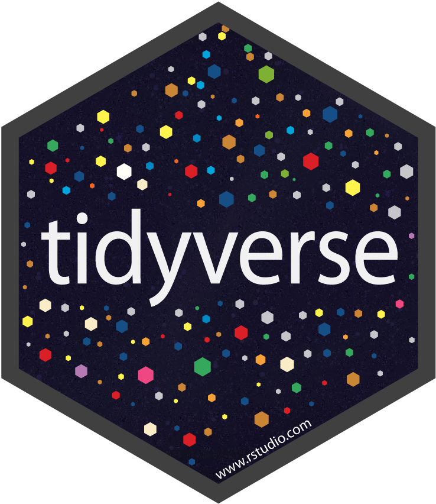
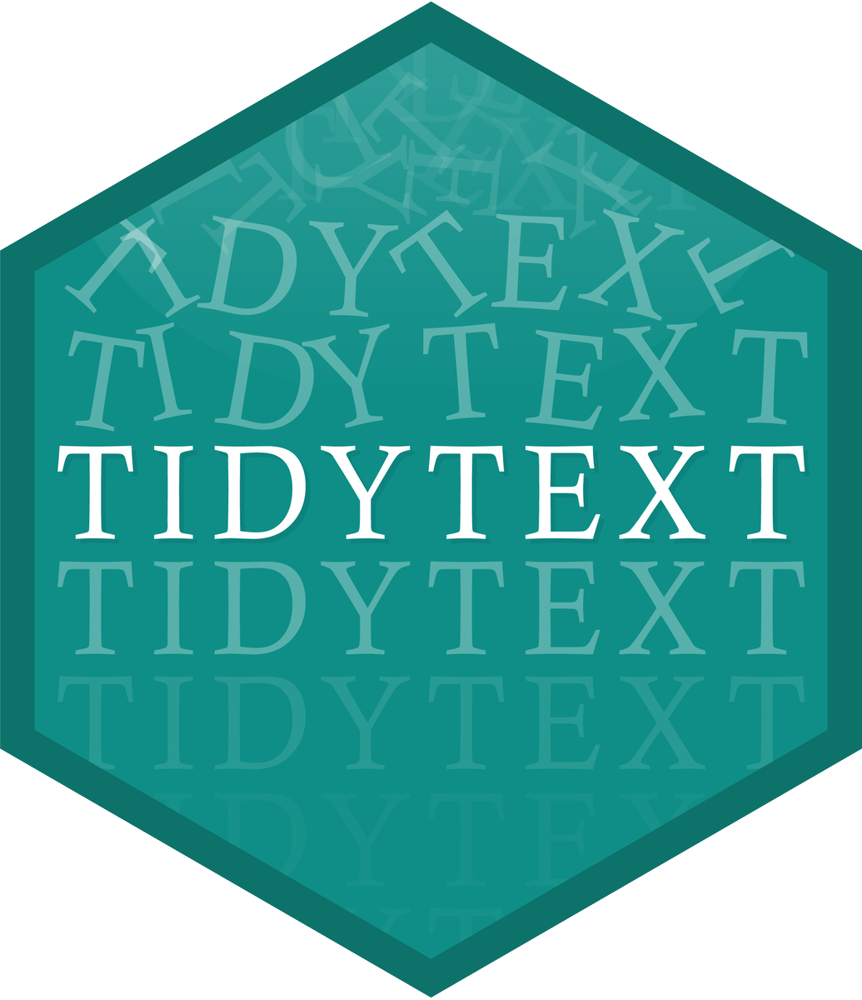
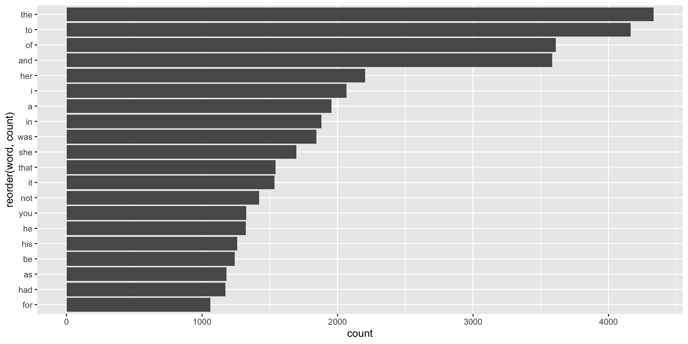
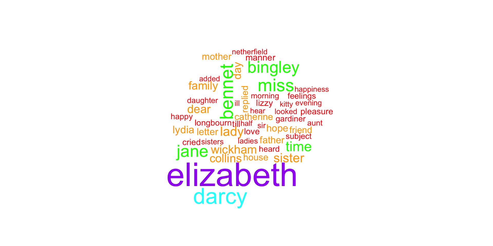
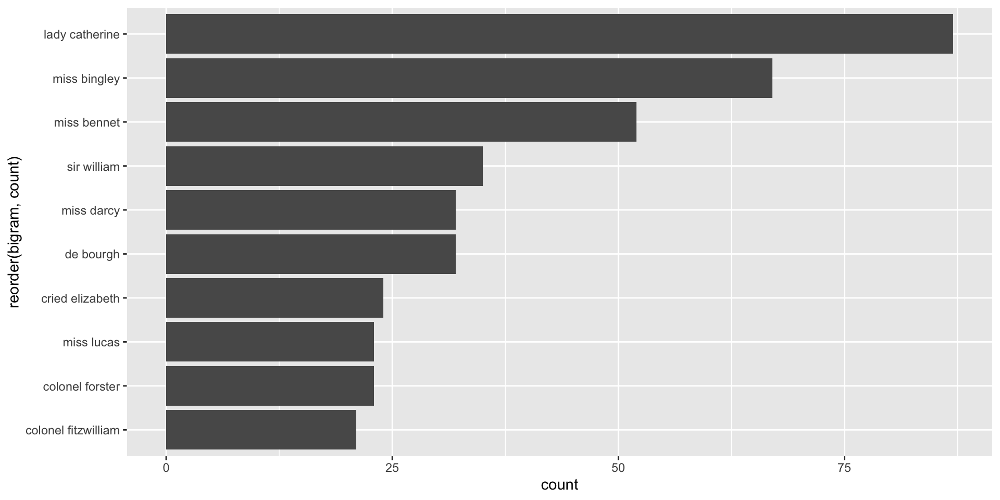

Text Analysis I
Text Mining
Text Analysis
Sources of text
Papers, articles, journals
Novels, fiction, non-fiction, books
Scripts: e.g. movie, plays, code
Reviews: e.g amazon, yelp, etc
Tweets, and similar social media outlets
Political speeches
questionnaires, surveys, polls, etc
ETC
Pride and Prejudice by Jane Austen
Pride and Prejudice (Jane Austen, 1813)

- Questions:
- What words are most commonly used?
- What is the emotional arc of the novel?
- Steps:
- Access text as computer file
- Read into R
- Data cleaning
- Summary statistics
- Visualization
Option 1.1: Read txt file directly from the web
[1] "The Project Gutenberg eBook of Pride and Prejudice"
[2] " "
[3] "This eBook is for the use of anyone anywhere in the United States and"
[4] "most other parts of the world at no cost and with almost no restrictions"
[5] "whatsoever. You may copy it, give it away or re-use it under the terms" Option 1.2: Read text from downloaded file
[1] "The Project Gutenberg eBook of Pride and Prejudice"
[2] " "
[3] "This eBook is for the use of anyone anywhere in the United States and"
[4] "most other parts of the world at no cost and with almost no restrictions"
[5] "whatsoever. You may copy it, give it away or re-use it under the terms" Option 2: Read from "gutenbergr" package
# A tibble: 10 × 2
gutenberg_id text
<int> <chr>
1 1342 " [Illustration:"
2 1342 ""
3 1342 " GEORGE ALLEN"
4 1342 " PUBLISHER"
5 1342 ""
6 1342 " 156 CHARING CROSS ROAD"
7 1342 " LONDON"
8 1342 ""
9 1342 " RUSKIN HOUSE"
10 1342 " ]" Option 3: Text from "janeaustenr" package
[1] "PRIDE AND PREJUDICE"
[2] ""
[3] "By Jane Austen"
[4] ""
[5] ""
[6] ""
[7] "Chapter 1"
[8] ""
[9] ""
[10] "It is a truth universally acknowledged, that a single man in possession"Package "tidytext"


About "tidytext"
"tidytext" (by Julia Silge and David Robinson) is an R package specifically designed for text mining analysis using Tidy tools1.
Question 1
What words are most commonly used?
To answer this question, we should consider a few key concepts/ideas:
Word or token: a single unit of text
Tokenize or Tokenization: Decompose (break down) a text into individuals tokens.
Bag-of-Words Analysis: this is perhaps the most basic type of text analysis based on counting frequencies of words or tokens.
Tokenize
Given some object containig text, e.g. vector
prideprejudice, there are a couple of different ways to tokenize it.At its core, you need to split the text into “words”.
You can tokenize “by-hand” with regex functions such as
str_split().More often than not, you will not only split text into tokens but also:
- convert to lower case
- remove punctuation symbols
- remove extra spaces
- remove digits
Tokenize
Conveniently, you can also use the unnest_tokens() function from package "tidytext". This requires data in a tabular format.1
# A tibble: 13,030 × 1
text
<chr>
1 "PRIDE AND PREJUDICE"
2 ""
3 "By Jane Austen"
4 ""
5 ""
6 ""
7 "Chapter 1"
8 ""
9 ""
10 "It is a truth universally acknowledged, that a single man in possession"
# ℹ 13,020 more rowsTokenization with unnest_tokens()
Frequency Analysis
Next step: getting frequencies (i.e. counts)
# A tibble: 20 × 2
word count
<chr> <int>
1 the 4331
2 to 4162
3 of 3610
4 and 3585
5 her 2203
6 i 2065
7 a 1954
8 in 1880
9 was 1843
10 she 1695
11 that 1541
12 it 1535
13 not 1421
14 you 1326
15 he 1324
16 his 1258
17 be 1240
18 as 1180
19 had 1173
20 for 1060Frequency Analysis
Next step: getting frequencies (i.e. counts)

Stop-Words
Stop-words: very common, uninteresting words that are typically removed in text analyses. "tidytext" comes with built-in stop_words
Removing stop-words
So far we have 2 tables:
How would you remove stop words from pride_tokens?
00:45
Removing stop-words
Removing stop-words
# A tibble: 6,009 × 2
word count
<chr> <int>
1 elizabeth 597
2 darcy 373
3 bennet 294
4 miss 283
5 jane 264
6 bingley 257
7 time 203
8 lady 183
9 sister 180
10 wickham 162
# ℹ 5,999 more rowsWordclouds

Bigram Analysis
N-grams
In addition to decomposing a text into single words, we can also look for sets of 2 or more consecutive words, which are called n-grams.
The good news is that unnest_tokens() can also be used to obtain these kind of tokens:
- bigrams:
n=2, decompose text into pairs (2 consecutive words) - trigrams:
n=3, decompose text into triplets (3 consecutive words) - 4-grams:
n=4, decompose text into sets of 4 (4 consecutive words)
Bigrams in Pride and Prejudice
Getting rid of NA’s in pride_bigrams
# A tibble: 50,265 × 2
bigram count
<chr> <int>
1 of the 439
2 to be 422
3 in the 365
4 i am 291
5 of her 245
6 it was 235
7 to the 231
8 mr darcy 230
9 of his 219
10 she was 204
# ℹ 50,255 more rowsBigrams containing “darcy” (Fitzwilliam Darcy)
# male protagonist
pride_bigrams |>
filter(str_detect(bigram, pattern = "darcy")) |>
count(bigram, name = "count", sort = TRUE)# A tibble: 219 × 2
bigram count
<chr> <int>
1 mr darcy 230
2 miss darcy 32
3 mr darcy's 27
4 darcy was 23
5 darcy and 19
6 darcy is 13
7 darcy she 13
8 darcy had 12
9 darcy who 11
10 darcy i 9
# ℹ 209 more rowsRemoving Stop Words when working with n-grams
What about removing stop-words from bigrams?
👎
Decompose the bigrams into individual words, and then filter out the entries that correspond to stop-words:
